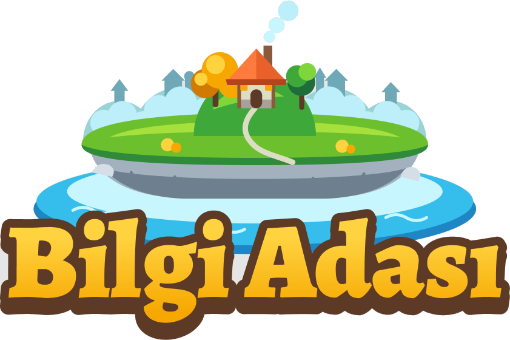
Jüri sunumu · konuşma metni
Slayt akışına göre kurgulanmış konuşma metni, sahne notları, canlı demo planı ve jüri soru-cevap hazırlığı.
| # | Slayt | Süre | Konuşan (öneri) |
|---|---|---|---|
| 1–2 | Kapak, Kanca | 0:00–0:45 | Mustafa |
| 3–4 | Neden, Fikir | 0:45–2:00 | Mustafa |
| 5–7 | Döngü, Kazan, Öğrenme ritmi | 2:00–4:00 | Mehmet |
| 8–9 | Masa ve tarla, Ada yaşıyor + canlı demo | 4:00–7:00 | Mustafa → Mehmet (demo) |
| 10–12 | Pazar, Alternatifler, Tasarım | 7:00–8:30 | Mustafa |
| 13–14 | Teknik, Yol haritası | 8:30–9:30 | Mehmet |
| 15 | Kapanış | 9:30–10:00 | Mustafa |
| 16 | Ek: kriter tablosu | Soru-cevap | İkisi |
Süre kısaysa (≈5 dk): her slaytın altındaki “kısa versiyon” notunu uygulayın, demoyu 1 dakikaya indirin.
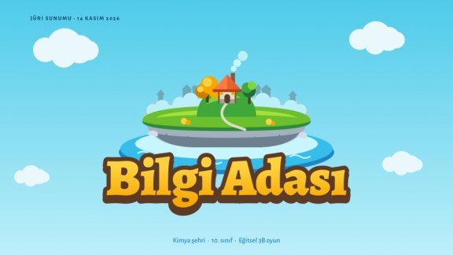
Slayt 1 · Açılış
[Logo ekranda. Üç saniye sessizlik. Jüriye dönün, gülümseyin.]
Lisede bir kimya dersinde hiç uyuyakaldınız mı?
[Bir saniye bekleyin; birkaç kişi gülümseyecek.]
Biz de. Ve bir gün kendimize şunu sorduk: ya o ders, uyandığımız yerde devam etseydi?
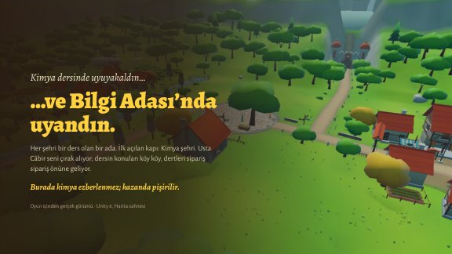
Slayt 2 · Kanca
[Slayt açılır. Sesinizi biraz alçaltın, hikâye anlatır gibi.]
Kimya dersinde uyuyakaldın… [duraklama] ve Bilgi Adası’nda uyandın.
Burası her şehri bir ders olan bir ada. İlk açılan kapı Kimya şehri. Câbir Usta seni kapısında buluyor ve çırağı yapıyor. Arkamda gördüğünüz kare, oyunun kendisinden.
Ve bu adanın çok basit bir kuralı var:
Burada kimya ezberlenmez; kazanda pişirilir.
Kısa versiyon: ikinci paragrafın son cümlesini atlayın.
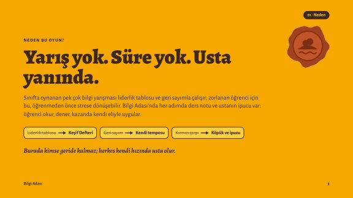
Slayt 3 · 01 Neden
Ama önce, neden bu oyun?
Sınıfta oynanan bilgi yarışmalarını hepimiz biliyoruz: geri sayım, liderlik tablosu, en hızlı olan kazanır. Önde olan için harika bir oyun. [duraklama] Peki ya sonda kalan? Konuyu henüz anlamamış bir öğrenci için o tablo, öğrenmeye başlamadan önce bir baskıya dönüşebiliyor.
Biz tersini yaptık. Bilgi Adası’nda yarış yok. Süre yok. Sıralama yok. Onun yerine bir usta var. Her görevden önce bir ders notu, takıldığında ustanın defteri.
[Ekrandaki üç kutuyu elinizle soldan sağa gösterin.]
Liderlik tablosunun yerine Keşif Defteri. Geri sayımın yerine kendi temposu. Kırmızı çarpının yerine köpüren bir kazan ve bir ipucu. Çünkü…
Burada kimse geride kalmaz; herkes kendi hızında usta olur.
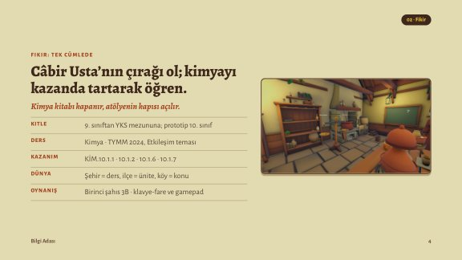
Slayt 4 · 02 Fikir
Tek cümleyle anlatırsak: Câbir Usta’nın çırağı ol, kimyayı kazanda tartarak öğren.
Adanın haritası aslında müfredatın haritası. Şehir bir ders, ilçe bir ünite, köy bir konu. Öğrenci nerede olduğunu hep bilir: “Kimya şehrindeyim, Etkileşim ilçesindeyim, Denkleştirme köyündeyim.”
Bugün açtığımız kapı, 2024 Maarif programının Etkileşim teması ve onun dört kazanımı. Ama asıl söylemek istediğimiz şu:
Kimya kitabı kapanır, atölyenin kapısı açılır.
[Mehmet bir adım öne çıkar.]
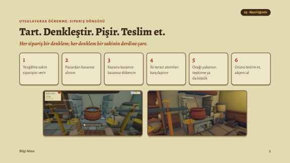
Slayt 5 · 03 Nasıl öğretir
Peki bu atölyede ne yapıyorsunuz?
Atölyenin önündeki tezgâha bir sakin gelir. Muhtar Yusuf: “Çeşme kurudu, su lazım.” Pazara gidersiniz, kavanozları alırsınız, kazana birer birer dökersiniz.
Sonra iki terazi konuşur. Biri kazanda ne olduğunu, öteki siparişin ne istediğini atom atom tartar. Kefeler dengeye oturduğunda ocağı yakarsınız. Ürün çıkar, sakine teslim edersiniz, akçenizi alırsınız.
Her sipariş bir denklem; her denklem, bir sakinin derdine çare.
Kısa versiyon: ikinci paragrafı “Bir sakin siparişini verir, kavanozları kazana dökersiniz.” diye tek cümleye indirin.
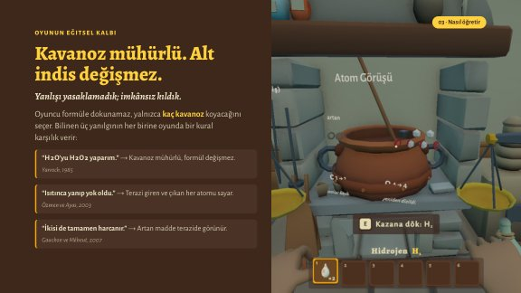
Slayt 6 · 03 Nasıl öğretir
[Bu sunumun en önemli slaytı. Yavaşlayın.]
Şimdi size bu oyunun kalbini göstermek istiyorum.
Kavanozlar mühürlü. Öğrenci formüle dokunamaz; yalnızca kaç kavanoz koyacağını seçebilir.
Neden bu kadar önemli? Çünkü 1985’ten beri literatürde yazan bir yanılgı var: öğrenci denklemi denkleştirmek için H₂O’yu H₂O₂ yapıverir. Biz bunu bir ders notunda “yapma” diye yazmakla yetinmedik. [duraklama]
Gaz çıkınca maddenin yok olduğunu sanan öğrenciye terazi her atomu gösterir. Girenlerin hepsi biter sanan öğrenciye artan madde kefede durur. Sağda gördüğünüz Atom Görüşü ise tepkimede atomların ayrılıp yeniden birleştiğini kazanın üstünde gösterir.
Yanlışı yasaklamadık; imkânsız kıldık.
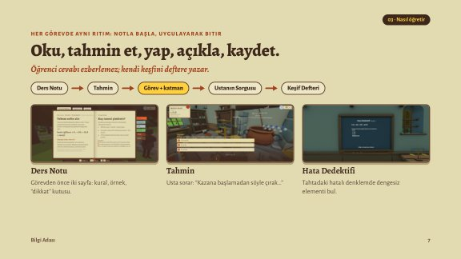
Slayt 7 · 03 Nasıl öğretir
Her görev aynı ritimle akar. Önce iki sayfalık bir ders notu. Sonra ustanın sorusu: “Kazana başlamadan söyle çırak…”
Sonra görevin kendisi ve içinde bir düşünme katmanı: tahtadaki hatalı denklemi bulduğunuz Hata Dedektifi, atomları kazanın içinde gösteren Atom Görüşü.
Görev bitince usta tek bir şey sorar: “Neden?” Ve cevap, öğrencinin kendi keşfi olarak deftere yazılır.
Öğrenci cevabı ezberlemez; kendi keşfini deftere yazar.
[Mustafa öne çıkar.]
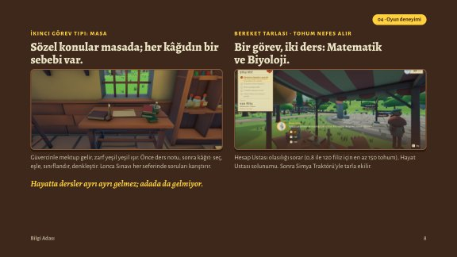
Slayt 8 · 04 Oyun deneyimi
Her konu kazana sığmaz. Tanımlar ve sınıflandırmalar masada çözülür: güvercinle bir mektup gelir, masadaki zarf yeşil yeşil ışır. Öğrenci test çözmez; fırıncının mektubunu cevaplar, lonca sınavına girer. Serbest metin yok; yazım hatası yüzünden kimse kaybetmez.
Ve tarlada, tek görevde iki ders buluşur. Hesap Ustası olasılığı sorar, Hayat Ustası tohumun neden nefes aldığını. Sonra Câbir Usta’nın buharlı traktörüne binip tarlayı kendiniz ekersiniz.
Hayatta dersler ayrı ayrı gelmez; adada da gelmiyor.
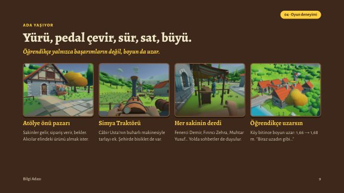
Slayt 9 · 04 Oyun deneyimi
Ve ada yaşıyor. Sakinler tezgâha gelir, sırasını bekler, ürününü alıp gider. Bisiklete binersiniz, traktör sürersiniz. Ama anlatmak yerine size göstermek istiyoruz.
[Demodan dönünce slayt 9’a geri gelin.]
Bir de küçük bir sırrımız var: bir köyü bitirdiğinizde boyunuz bir santim uzar. Sınıf atladığınızda belirgin biçimde.
Öğrendikçe yalnızca başarımların değil, boyun da uzar.
Kısa versiyon: demoyu 1, 3 ve 4. adımlarla 1 dakikada bitirin.
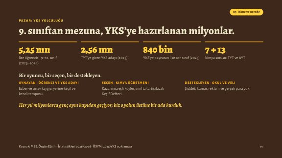
Slayt 10 · 05 Kime ve nerede
Bu oyunu kime yaptık? Bir yolculuğa. 9. sınıfta başlayıp YKS’ye, mezun olduktan sonra yeniden hazırlanan adaylara kadar uzanan bir yolculuğa.
Lisede beş virgül yirmi beş milyon öğrenci var. [duraklama] Geçen yıl TYT’ye iki buçuk milyonu aşkın aday girdi. Kimya bu yolculuğun her yılında, hem TYT’de hem AYT’de karşılarına çıkıyor.
Ve biz üç kişiye yazdık: oynayan öğrenciye, onu seçen öğretmene, ona güvenen okula ve veliye.
Her yıl milyonlarca genç aynı kapıdan geçiyor; biz o yolun üstüne bir ada kurduk.
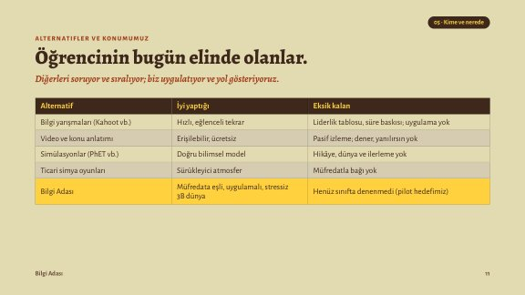
Slayt 11 · 05 Kime ve nerede
Bugün bir öğrencinin elinde ne var? Bilgi yarışmaları hızlı, ama yarıştırıyor. Videolar erişilebilir, ama izletiyor. Simülasyonlar doğru, ama hikâyesiz. Simya oyunları büyüleyici, ama müfredatsız.
Biz bu dördünün kesiştiği yerde duruyoruz. Ve tablodaki son satırı bilerek dürüst yazdık: henüz bir sınıfta denenmedik. [jüriye bakın] Bu bir eksik değil; bir sonraki adımımız.
Diğerleri soruyor ve sıralıyor; biz uygulatıyor ve yol gösteriyoruz.
Kısa versiyon: yalnızca ilk paragraf ve vurgu cümlesi.
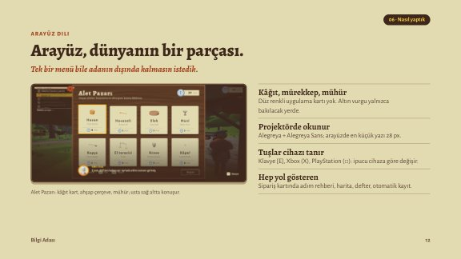
Slayt 12 · 06 Nasıl yaptık
Tasarımda tek bir kuralımız vardı: arayüz, dünyanın bir parçası olsun. Pazar ekranı kâğıt kartlardan, sipariş mühürlü bir nottan, menüler ahşaptan. Projektörde üç metreden okunsun diye en küçük yazı 28 piksel. Klavyeyle de oynarsınız, gamepad’le de; ekrandaki tuş ipucu elinizdeki cihazı tanır.
Tek bir menü bile adanın dışında kalmasın istedik.
[Mehmet öne çıkar.]
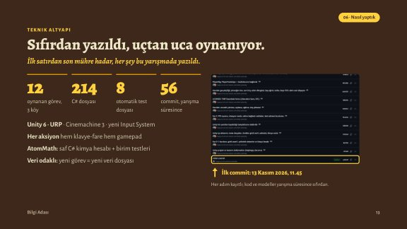
Slayt 13 · 06 Nasıl yaptık
Ve hepsi bu yarışmada yazıldı. [GitHub görselindeki altın çerçeveyi gösterin.] İlk commit: 13 Kasım, saat 11.45.
O andan bugüne 56 commit, 214 C# dosyası, kimya hesabını denetleyen otomatik testler ve uçtan uca oynanan 12 görev. Görevler veri dosyalarında yaşıyor; yeni bir görev eklemek kod yazmak değil, yeni bir dosya açmak demek.
İlk satırdan son mühre kadar, her şey bu yarışmada yazıldı.
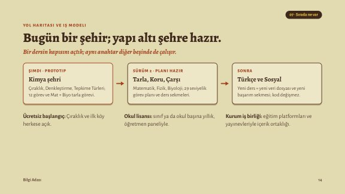
Slayt 14 · 07 Sırada ne var
Bugün bir şehir. Yarın? Matematik, Fizik ve Biyoloji için 29 seviyelik görev planı hazır; ilk tarla görevi zaten oyunda. Sonra Türkçe ve Sosyal.
Yaygınlaşma yolumuz da net: ilk köy herkese ücretsiz, okullara yıllık lisans, eğitim platformlarıyla iş birliği.
Bir dersin kapısını açtık; aynı anahtar diğer beşinde de çalışır.
[Mustafa öne çıkar; son slayt.]
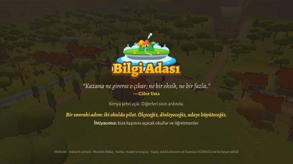
Slayt 15 · Kapanış
[Sesi alçaltın. Açılıştaki soruya dönüyoruz; bu, hikâyenin halkasını kapatır.]
Başta size bir soru sormuştuk: kimya dersinde hiç uyuyakaldınız mı?
Biz o öğrenciyi uyandırmak istemedik. [duraklama] Onu, uyanmak isteyeceği bir yere götürmek istedik.
Câbir Usta’nın sözüyle bitirelim: “Kazana ne girerse o çıkar; ne bir eksik, ne bir fazla.” Bu cümle hem kütlenin korunumu, hem de bizim tasarım ilkemiz: oyuna koyduğumuz her şey bir şey öğretiyor, fazlası yok.
Bir sonraki adımımız iki okulda pilot. Ölçeceğiz, dinleyeceğiz, adayı büyüteceğiz. Bunun için tek bir şeye ihtiyacımız var: kapısını açacak okullar ve öğretmenler.
Kimya şehri açık. Diğerleri sisin ardında.
[İki saniye sessizlik. Sonra ikiniz birlikte:]
Teşekkür ederiz.
Slayt 16 · Ek
Kriter tablosunu soru-cevap boyunca ekranda tutun. Her cevap üç adımlı olsun: doğrudan cevap → oyundan bir kanıt → kısa bir kapanış cümlesi. Bilmediğiniz bir şeyde “henüz ölçmedik, pilotta ölçeceğiz” demek, uydurmaktan her zaman daha güçlüdür.
“Kazana ne girerse o çıkar; ne bir eksik, ne bir fazla.” — Câbir Usta